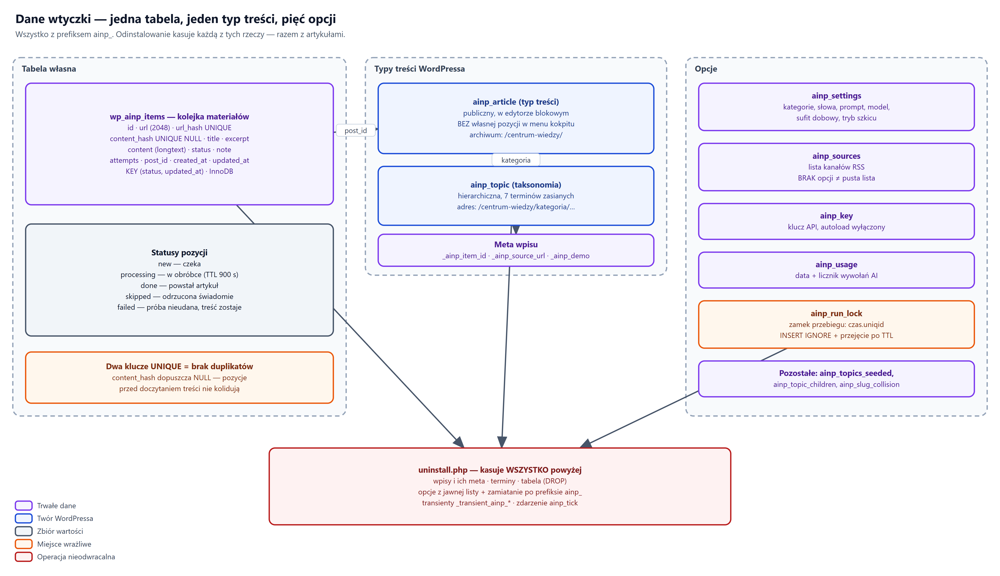

AI News Portal — struktury, pola i wartości dopuszczalne
Zakres. Dokument referencyjny. Opisuje kształt danych: kolumny tabeli, statusy, strukturę żądania do modelu i odpowiedzi, opcje konfiguracyjne, adresy i komunikaty. Nie opisuje przebiegu działania — ten jest w Instrukcji dla informatyka (Functional).
Sposób czytania. Każda sekcja ma identyfikator
(S1 … S7), do którego odwołują się pozostałe dokumenty.
AI News Portal {{WERSJA}} · licencja {{LICENCJA}}

schematy/03-dane.drawioJedyna tabela własna wtyczki:
{prefiks}ainp_items. Silnik InnoDB, kodowanie i sortowanie z rdzenia
WordPressa.
| Kolumna | Typ | Znaczenie |
|---|---|---|
id | bigint(20) unsigned, auto |
klucz główny |
url | varchar(2048) |
adres materiału po normalizacji (bez parametrów śledzących) |
url_hash | char(64), UNIQUE |
skrót adresu — bramka powtórek po adresie |
content_hash | char(64) NULL, UNIQUE |
skrót treści — bramka powtórek po treści; NULL do czasu
doczytania treści |
title | text | tytuł z kanału |
excerpt | text | zajawka z kanału |
content | longtext |
treść materiału; zostaje także przy niepowodzeniu |
status | varchar(20), domyślnie new |
stan pozycji — patrz S2 |
note | text |
powód odrzucenia lub treść błędu — patrz S7 |
attempts | smallint(5) unsigned |
licznik prób; sufit samoczynny to 3 |
post_id | bigint(20) unsigned |
identyfikator opublikowanego wpisu; 0 = brak |
created_at, updated_at | datetime |
znaczniki czasu |
| Klucz | Kolumny | Po co |
|---|---|---|
PRIMARY | id | — |
ainp_url_hash (UNIQUE) | url_hash |
brak duplikatów po adresie, wymuszony przez bazę |
ainp_content_hash (UNIQUE) | content_hash |
brak duplikatów po treści; wiele NULL jest dozwolonych |
ainp_status | status, updated_at |
wybór pozycji do przetworzenia i odzysk zawieszonych |
Dlaczego content_hash dopuszcza NULL.
Pozycje zapisane w fazie pobrania nie mają jeszcze treści. Gdyby kolumna wymagała
wartości, wszystkie takie wiersze kolidowałyby ze sobą na kluczu UNIQUE
i do kolejki weszłaby dokładnie jedna pozycja na przebieg.
| Status | Etykieta w panelu | Znaczenie |
|---|---|---|
new | nowy | pozycja w kolejce, czeka na przygotowanie albo publikację |
processing | w trakcie | pozycja zajęta przez przebieg; po 900 s wraca do new |
done | opublikowany | powstał wpis; post_id wskazuje na artykuł |
skipped | pominięty | odrzucona świadomie przez bramkę; powód w note |
failed | nieudany | próba nieudana; treść zostaje, możliwe wznowienie |
| Z | Do | Kiedy |
|---|---|---|
| — | new | zapis pozycji w fazie pobrania |
new | skipped |
trafienie słowa wykluczającego, brak słowa wymaganego, powtórka treści |
new | processing | zajęcie pozycji przez przebieg |
processing | new |
odzysk po przekroczeniu 900 s |
processing | done | publikacja się powiodła |
processing | failed |
błąd sieci, odmowa dostawcy, złamany kontrakt odpowiedzi |
failed | new |
ręczne „Wznów nieudane” |
Wyczerpanie budżetu czasu to nie porażka pozycji. Gdy przebieg
kończy się z braku czasu przed wywołaniem modelu, pozycja zostaje w stanie
new z nietkniętym licznikiem prób — nie zużywa jednej z trzech szans.
Jedno żądanie POST na artykuł, punkt końcowy
generativelanguage.googleapis.com/v1beta/models/{model}:generateContent.
| Część | Sufit |
|---|---|
| tytuł | 300 znaków |
| adres | 500 znaków |
| treść | 12 000 znaków |
Treść jest opakowana w ogrodzenie tekstowe:
<<<MATERIAL_ZRODLOWY … treść materiału … MATERIAL_ZRODLOWY>>>
Wystąpienia znacznika wewnątrz samego materiału są neutralizowane, żeby cudza strona nie mogła zamknąć ogrodzenia i dopisać własnego polecenia.
| Pole | Wartość |
|---|---|
responseMimeType | application/json |
responseSchema | obiekt o czterech polach — patrz S4 |
temperature | 0.4 |
maxOutputTokens | 8192 |
| model | gemini-2.5-flash (domyślny, edytowalny) |
| timeout | od 8 do 30 s, wyznaczany przez pozostały budżet |
| sufit odpowiedzi | 1 MB |
Schemat Gemini nie jest pełnym JSON Schema. To osobny typ
po stronie API i każde nieznane pole wywraca całe żądanie na HTTP 400 —
razem z poprawną resztą. Dopisanie additionalProperties zablokowało
kiedyś publikację w całości. Przyjmowane są m.in. type,
properties, enum, required,
propertyOrdering.
{
"title": "…", // tytuł artykułu
"lead": "…", // zajawka
"content": "…", // treść artykułu
"topic": "…" // kategoria — wartość z listy w Ustawieniach
}
Pole topic jest wysyłane jako enum zbudowany z listy kategorii.
Gdy lista jest pusta, wysyłany jest zwykły string — puste
enum jest po stronie API błędem żądania, a nie „dowolną wartością”.
| Pole | Minimum | Maksimum | Dodatkowo |
|---|---|---|---|
title | 5 | 140 | — |
lead | 20 | 400 | — |
content | 800 | — | — |
topic | — | dokładne dopasowanie do kategorii z Ustawień | |
| Pole odpowiedzi | Do czego służy |
|---|---|
finishReason | rozpoznanie odpowiedzi uciętej przez limit tokenów |
usageMetadata.promptTokenCount | kontrola rozmiaru materiału |
usageMetadata.thoughtsTokenCount |
wyjaśnia rozrzut czasu odpowiedzi przy identycznym wejściu (N1.4) |
usageMetadata.cachedContentTokenCount |
sygnał, że odpowiedź pochodzi z pamięci podręcznej dostawcy — powtórzony pomiar na tym samym materiale nie jest niezależną próbką |
| Opcja | Zawartość | Uwagi |
|---|---|---|
ainp_settings | tablica pól ustawień — niżej | — |
ainp_sources | lista adresów kanałów RSS | brak opcji ≠ pusta tablica: brak daje cztery kanały domyślne, pusta tablica wyłącza pobieranie |
ainp_key | klucz API | autoładowanie wyłączone |
ainp_usage | { "date": "RRRR-MM-DD", "count": N } |
licznik dobowy wywołań modelu |
ainp_run_lock | czas.identyfikator |
zamek przebiegu; TTL 120 s |
| Opcja | Zawartość |
|---|---|
ainp_topics_seeded | odcisk listy kategorii już zasianych |
ainp_topic_children | powiązania terminów podrzędnych |
ainp_slug_collision |
sygnał, że witryna ma już Stronę o adresie centrum-wiedzy |
ainp_settings| Pole | Etykieta w kokpicie | Wartość domyślna |
|---|---|---|
categories | Kategorie | Żywienie, Zdrowie, Zachowanie, Szkolenie, Pielęgnacja, Rasy, Życie z psem |
excluded_words | Słowa wykluczające | lista trójwarstwowa: inne gatunki, ogłoszenia i komercja, treści drażliwe |
required_words | Słowa wymagane | formy odmienione słowa „pies”; pusta lista wyłącza bramkę |
prompt | Prompt | instrukcja systemowa dla modelu |
model | Model | gemini-2.5-flash |
daily_cap | Sufit wywołań AI na dobę | 20 |
save_as_draft | Publikacja | wyłączone — artykuły publikowane, nie zapisywane jako szkice |
Porównanie słów pomija znaki diakrytyczne i stosuje granicę słowa. Formy odmienione trzeba wypisać osobno — wtyczka nie odmienia wyrazów.
| Element | Wartość |
|---|---|
| Typ treści | ainp_article, publiczny, edytor blokowy,
bez własnej pozycji w menu kokpitu |
| Obsługiwane pola | tytuł, treść, zajawka |
| Etykieta archiwum | Centrum Wiedzy — pod tą nazwą pozycja występuje w edytorze menu |
| Taksonomia | ainp_topic, hierarchiczna, widoczna jako kolumna
na liście wpisów |
| Meta wpisu | _ainp_item_id · _ainp_source_url ·
_ainp_demo |
| Widok | Adres |
|---|---|
| Archiwum | /centrum-wiedzy/ |
| Artykuł | /centrum-wiedzy/{slug-artykulu}/ |
| Kategoria | /centrum-wiedzy/kategoria/{slug-kategorii}/ |
| Wyszukiwanie | /centrum-wiedzy/?ainp_s={fraza} |
| Stronicowanie | /centrum-wiedzy/page/{n}/, po
10 pozycji |
Człon kategoria nie jest ozdobnikiem. Bez niego reguła
adresu artykułu i reguła adresu kategorii mają identyczny wzorzec, a WordPress
wybiera pierwszą z brzegu — adres kategorii zwracał wtedy 404 z zapytaniem o artykuł
o takim slugu.
| Ścieżka | Zawartość |
|---|---|
assets/kategorie/{slug}.jpg |
zdjęcie kategorii, wariant podstawowy |
assets/kategorie/{slug}-2.jpg, -3.jpg |
warianty dodatkowe; sufit wariantów: 3 |
| format | JPEG 1200 × 675 |
Teksty trafiające do kolumny note i widoczne
w panelu w kolumnie Powód.
| Komunikat | Status | Znaczenie |
|---|---|---|
| „Słowo wykluczające: {słowo}” | skipped |
trafienie listy wykluczeń w tytule, zajawce lub treści |
| „Poza tematem: brak słowa wymaganego w tytule i zajawce” | skipped |
bramka słów wymaganych |
| „Brak klucza API w Ustawieniach” | failed |
wywołanie nie zostało podjęte |
| „Wyczerpany sufit dobowy wywołań AI” | failed |
licznik osiągnął wartość z Ustawień |
| „Za mało czasu w tym przebiegu na wywołanie AI” | bez zmiany | pozostały budżet poniżej 8 s; pozycja zostaje
w new, licznik prób nietknięty |
| „cURL error 28: Operation timed out…” | failed |
żądanie ucięte po czasie — slot został zużyty |
| HTTP 400 od dostawcy | failed |
błędne żądanie; odrzucone żądanie nie zużywa przydziału po stronie dostawcy |
| HTTP 503 od dostawcy | failed |
chwilowa niedostępność, nie limit — ponowienie zwykle przechodzi |
| Komunikat | Kiedy |
|---|---|
| „Lista kanałów RSS jest pusta — dopisz adresy w Ustawieniach.” | opcja kanałów zapisana jako pusta tablica |
Ostrzeżenie o zajętym adresie centrum-wiedzy |
witryna ma już Stronę o tym adresie — sygnał zapisany przy aktywacji |
| „Ostatni automatyczny przebieg …” | podsumowanie z transientu ważnego 24 h |